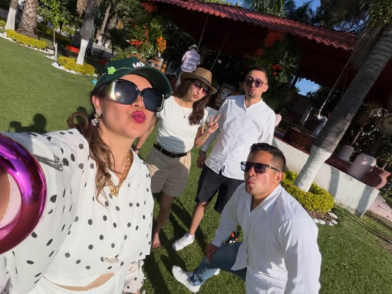
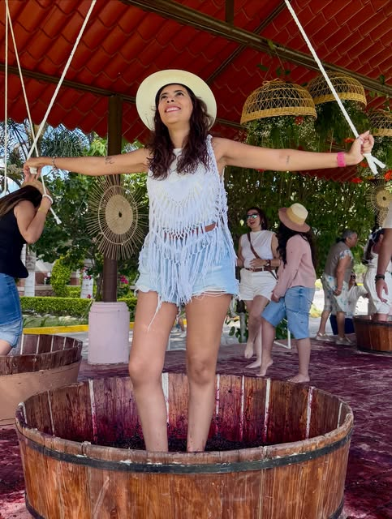
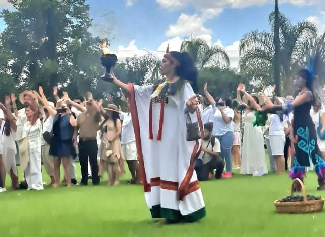

Syrah
Nuestra etiqueta insignia — intensas notas de frutos rojos y un carácter que define la casa.
Ruta del Queso y Vino · Tequisquiapan, Querétaro
Un viñedo familiar donde la tradición se convierte en vino: recorridos guiados, catas, un jardín para bodas y eventos, y la Vendimia — nuestra celebración anual de la cosecha.

Nuestra historia
Viñedos Los Rosales ha cultivado vid en este mismo rincón de Tequisquiapan por más de cuatro décadas. Desde 2011 comenzamos la aventura de producir nuestro propio vino, con el cuidado artesanal que solo da hacer las cosas en familia, paso a paso, cosecha tras cosecha.
Hoy somos parte de la Ruta del Queso y Vino de Querétaro — un destino para quienes buscan una tarde entre vides, buena mesa y la calidez de un lugar que sigue siendo, después de todo este tiempo, profundamente familiar.
Nuestros vinos
Vinos artesanales, producidos en pequeños lotes, con el carácter de la tierra donde crecen.
Nuestra etiqueta insignia — intensas notas de frutos rojos y un carácter que define la casa.
Suave y equilibrado, el vino de todos los días en Los Rosales.
Cuerpo completo y estructura — ideal para acompañar una tarde larga de sobremesa.
Redondo y frutal, uno de los favoritos en nuestras catas guiadas.
Momentos en Los Rosales


Experiencias
Cada visita a Los Rosales está pensada para vivirse despacio.
Camina entre las vides y conoce de cerca el proceso de cultivo y producción.
Descubre nuestras cuatro etiquetas guiado por quienes las producen.
Nuestro jardín entre vides, el escenario perfecto para tu celebración.
Nuestra fiesta de cosecha — pisado de uvas, música en vivo y gastronomía.
Quiénes cuidan cada copa
Detrás de cada botella hay cuatro décadas de la misma familia caminando entre las mismas hileras de vid. No somos una operación industrial: somos quienes podamos las plantas, quienes reciben a los grupos los fines de semana y quienes sirven la copa en la Vendimia.
Esa cercanía es la que notan quienes nos visitan — el trato directo, las dudas resueltas por alguien que de verdad conoce el viñedo, y un ritmo de trabajo artesanal que preferimos mantener en pequeños lotes antes que crecer sin cuidado.
Lo que dicen quienes nos visitan
Reseñas reales de Google Maps, sin edición.
“Un lugar muy romántico, te venden la tabla de quesos y el vino acorde a tu gusto, hay música en vivo a cierta hora y te pasan a la degustación así como al recorrido por la fábrica.”
“Excelente recorrido, todas mis dudas respondidas, muy ricos los vinos. Vinimos en la temporada del festival del arte, vino y queso y tuvimos un trato muy bueno.”
“Es muy bonito lugar, amplio y con poca gente. Cuenta con una explanada súper bonita para pasar la tarde.”
Nuestra fiesta de cosecha
Este año vivimos otra tarde inolvidable: pisado de uvas, copa conmemorativa, música en vivo y experiencias sensoriales entre las vides. Los cupos de cada edición son limitados y se agotan rápido.
Cómo llegar
Reserva tu visita
Responde tres preguntas rápidas y te contactamos por WhatsApp para armar tu recorrido, cata o evento en Los Rosales.